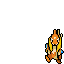
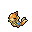

Pokédex / #419
Floatzel #419
Water
It is a common sight around fishing ports. It is known to rescue people and carry off prey.
Generation 4 · Sinnoh

Stats
| Attack | 105 | |
|---|---|---|
| Defense | 55 | |
| Sp. Atk | 85 | |
| Sp. Def | 50 |
In the wild
| Wild level | 40–50 |
|---|---|
| HP | 85 |
| Experience | 10 |
| Egg groups | Water 1, Field |
Evolution
- Evolves from Buizel at level 35.
Moves
| Level | Move | Type | Category | Power | Energy | Cooldown | Effect | |
|---|---|---|---|---|---|---|---|---|
| 1 | Tackle | Normal | Physical | 15 | 15 | 1s | Tackle is one of the most common and basic moves a Pokemon learns. It deals damage with no additional effects. | |
| 5 | Growl | Normal | Status | – | 60 | 60s | The user growls in a cute way, making the foe lower its ATTACK. stat. | |
| 10 | Quick Attack | Normal | Physical | 40 | 40 | 6s | Quick Attack deals damage and has no secondary effect. | |
| 15 | Water Gun | Water | Special | 40 | 45 | 9s | Water Gun inflicts damage and has no secondary effect. | |
| 20 | Aqua Jet | Water | Physical | 40 | 40 | 6s | The user lunges at the target at a speed that makes it almost invisible. | |
| 25 | Bite | Dark | Physical | 60 | 60 | 9s | Bite deals damage and has a 30% chance of causing the target to flinch. | |
| 30 | Swift | Normal | Special | 60 | 60 | 9s | Swift deals damage and ignores changes to the Accuracy and Evasion stats. | |
| 40 | Double Hit | Normal | Physical | 35 | 65 | 11s | Double Hit hits twice in one turn. | |
| 45 | Whirlpool | Water | Special | 35 | 100 | 20s | The user traps the target in a violent swirling whirlpool for four to five turns. | |
| 50 | Liquidation | Water | Physical | 85 | 85 | 12s | The user slams into the target using a full-force blast of water. It has a 20% chance of lowering the target's Defense and Special Defense by one stage each. | |
| 55 | Aqua Tail | Water | Physical | 90 | 90 | 14s | Aqua Tail deals damage and has no secondary effect. | |
| 60 | Agility | Normal | Status | – | 80 | 20s | Agility raises the user's Speed by two stages. | |
| 65 | Hydro Pump | Water | Special | 110 | 120 | 27s | Hydro Pump inflicts damage and has no secondary effect. | |
| 70 | Wave Crash | Water | Physical | 120 | 125 | 27s | The user shrouds itself in water and slams into the target. This also damages the user quite a lot. |
Field abilities
Rock SmashHeadbuttStrengthDig
Special abilities
Swift Swim
Egg moves
Aqua RingAqua TailDouble SlapFury CutterFury SwipesHeadbuttMud-SlapSlash
Technical machines
BlizzardBrick BreakBulk UpDouble TeamFacadeFocus PunchHailHidden PowerHyper BeamIce BeamIron TailProtectRain DanceRestRoarRock TombSecret PowerSubstituteToxicWater Pulse
Drops
| Item | Amount | Chance | |
|---|---|---|---|
| razor fang | 1 | 100% | |
| water gem | 1–10 | 100% | |
| pot of water | 1 | 28% | |
| blue sphere | 1 | 23.3% | |
| cutting fang | 1 | 14% | |
| onigiri | 1–5 | 5% | |
 | floatzel doll | 1 | 0.1% |
| Splash Plate | 1 | 0.05% | |
| held mystic water | 1 | 0.02% |